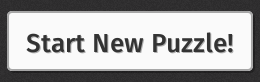
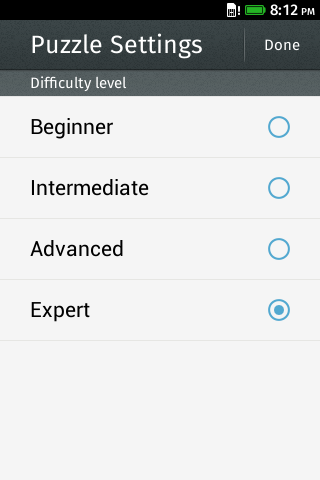

Firefox OS
Salamanca hoy disfruta de Firefox OS!!!
A programar se ha dicho!!!
- Vamos a crear nuestro primer juego en Firefox OS:
- Un sencillo puzzle de fotos almacendas o tomadas desde el móvil
- Usaremos canvas, transformaciones de traslación, escalado, etc... exprimiendo CSS3
- Aunque antes necesitamos un poco más de contexto...
Formatos de aplicación
Hosteadas vs Empaquetadas
Web Apps hosteadas
- Una website más un manifiesto
- Una aplicación por origen
- Los recursos pueden ser cacheados (appcache) para el offline
- Los privilegios son muy similares a cualquier contenido web:
- Mayor parte de APIs nativas via Web Activities
Web Apps empaquetadas
- Recursos en un paquete zip
- Aplicaciones verificadas por un app store
- Apps serán aprobadas despues de una revisión de código o algun proceso equivalente de seguridad
El manifiesto de nuestro juego
{
"name": "Puzzle",
"description": "Puzzle Game",
"permissions": {
"settings":{ "access": "readonly" }
},
"launch_path": "/index.html",
"developer": {
"name": "Cristian Rodríguez de la Cruz"
},
"locales": {
"en-US": { "name": "Puzzle", "description": "Puzzle Game" }
},
"default_locale": "en-US",
"icons": {
"60": "/style/icons/puzzle.png"
},
"orientation": "portrait-primary"
}
Instalando app hosteada
var installApp = navigator.mozApps.install(manifestURL);
// Successful install
installApp.onsuccess = function(data) {
console.log("Success, app installed!");
};
// Install failed
installApp.onerror = function() {
console.log("Install failed\n\n:" + installApp.error.name);
};
Instalando app empaquetada
- Paso 1: empaquetar en un zip todo el contenido incluyendo el manifiesto
- Paso 2: crear un mini manifiesto
{
"name": "Puzzle Game",
"package_path" : "http://www.tid.es/puzzleGame.zip",
"version": "1",
"developer": {
"name": "Cristian Rodríguez de la Cruz"
}
}
var installApp = navigator.mozApps.installPackage(miniManifestURL);
Tipos de aplicación
Web, instaladas, privilegiadas y certificadas
¿Quién es quien?
- Contenido Web
- Web Apps Instaladas: contenido web instalado pero no verificado
- Web Apps Empaquetadas:
- Privilegiadas: contenido web estático revisado e instaladado por un trusted app store
- Certificadas: contenido web estático instalado por el vendor y OEM
Tipo de permisos: "Implícito vs Explícito"
- Explícito: El usuario debe garantizar el permiso. Declarado en manifiesto pero garantizado en ejecución (Geolication, Contacts, ...)
- Implícito: Permiso garantizado por su naturaleza. Revisado por el app store
¿Qué permisos para que aplicaciones?
- Web: Geolocation, Fullscreen
- Instaladas: Sensor API, Alarm API, FM Radio
- Privilegiadas: Camera API, Alarm API, TCP Socket, Contacts API, Device Storage API, Browser API, WiFi Information API
- Certificadas: Background services, WebSMS, WebTelephony, WebBluetooth, MobileConnection API, PowerManagement API, Push Notifications API, Settings API, Permissions
Avanzando...
Nuesto puzzle dentro de FOS
Web Acticities: "pick"
APIs nativas: Vibración
Librerías: Multi-idioma
Actividad "pick" de tipo "image/jpeg"
var activity = new MozActivity({
name: 'pick',
data: {
type: 'image/jpeg',
width: window.innerWidth - (2 * Game.rows),
height: window.innerHeight - OFFSET_TOP - (2 * Game.rows)
}
});
activity.onsuccess = function success() {
Game.start(URL.createObjectURL(this.result.blob), function done() {
gameView.dataset.pagePosition = 'viewport';
});
};
activity.onerror = function error() {
window.console.error('Error picking a picture: ', activity.error);
};
Vibration API
var vibrate = (function vibrateWrapper() {
return 'vibrate' in navigator ? function(t) { navigator.vibrate(t) } :
function() { /* simulator */ };
})();
if (sourceTile.dataset.position === targetIndex.toString()) {
vibrate([100]);
// 100ms. E.g. [200, 100, 200] -> This vibrates the device for 200ms, then
// pauses for 100ms before vibrating the device again for another 200ms
}
https://developer.mozilla.org/en/docs/DOM/window.navigator.vibrate
Multi-idioma (recursos & definición)
<!-- Localization --> <link rel="resource" type="application/l10n" href="locales/locales.ini"> <script type="application/javascript" src="js/l10n.js"></script>
https://github.com/mozilla-b2g/gaia/blob/master/shared/js
@import url(puzzle.en-US.properties) [es] @import url(puzzle.es.properties) [fr] @import url(puzzle.fr.properties)
game-title = Puzzle Game
difficulty-msg = The difficulty is {{difficulty}}
game-title = El juego del Puzzle
difficulty-msg = La dificultad es {{difficulty}}
Multi-idioma (API)
- HTML
<h1 data-l10n-id="game-title">Puzzle Game</h1>
- Javascript
var _ = navigator.mozL10n.get;
var message = _('difficulty-msg', { difficulty: 7 });
navigator.mozL10n.ready(function localize() {
// La UI ha sido traducida
});
Nuestro puzzle con sabor Firefox OS (Building Blocks)
Componentes en HTML + CSS para manetener consistencia visual
Accesibilidad - Utilizan roles aria
Aceleran el desarrollo de la app
¿Qué necesitamos para nuestro juego?
- Cabeceras
- Botones
- Listas
- Selectores

BB - Cabeceras
<link rel="stylesheet" type="text/css" href="style/headers.css">
<header>
<menu type="toolbar">
<a href="#" id="settings-open">
<span class="icon icon-settings" data-l10n-id="settings">
Settings
</span>
</a>
</menu>
<h1 data-l10n-id="game-title">Puzzle Game</h1>
</header>
section[role="region"] > header .icon.icon-settings {
background-image: url(images/settings.png);
}
BB - Botones
<link rel="stylesheet" type="text/css" href="style/buttons.css">
<button id="play-button" data-l10n-id="game-start">Start New Puzzle!</button>
#play-button {
border: .2rem solid #ccc9c9;
box-shadow: 0 .3rem .4rem rgba(0,0,0,.49);
background-image: linear-gradient(bottom, #cbcbcb 0%, #fbfbfb 100%);
color: #333;
margin-top: 15rem;
height: 6rem;
font: 500 2.6rem/6rem 'MozTT', Sans-serif;
width: auto;
border-radius: .5rem;
text-shadow: .1rem .1rem 0 rgba(0,0,0,0.3);
}

BB - Listas y switches
<link rel="stylesheet" type="text/css" href="style/list.css"> <link rel="stylesheet" type="text/css" href="style/switches.css">
<header>
<h2 data-l10n-id="level">Difficulty level</h2>
</header>
<ul>
<li>
<label>
<input type="radio" name="level" value="2" />
<span></span>
</label>
<a data-l10n-id="level-beginner">Beginner</a>
</li>
<li>
<label>
<input type="radio" name="level" value="3" />
<span></span>
</label>
<a data-l10n-id="level-intermediate">Intermediate</a>
</li>
</ul>
BB - Listas y switches II
ul {
margin: 0; padding: 0;
overflow: hidden; list-style: none;
}
ul li {
position: relative; border-bottom: 0.1rem solid #e6e6e3;
-moz-box-sizing: border-box; min-height: 6rem; color: #000;
}
ul li > a {
display: block; text-decoration: none;
outline: 0; color: #000;
-moz-box-sizing: border-box; height: 6rem;
font-size: 2.1rem; line-height: 6rem; padding: 0 3rem;
}
ul li > label:not([for]) {
top: 0; left: 0; position: absolute;
width: 100%; height: 100%;
}
ul li > label:not([for]) > span {
left: auto; right: 3rem;
}
BB - Listas y switches III

Código fuente del juego